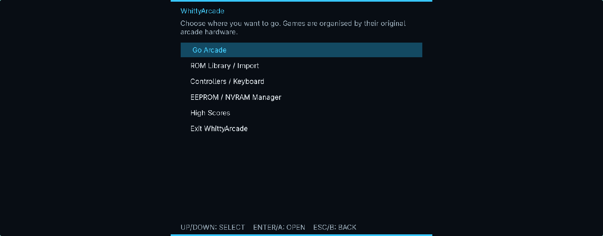
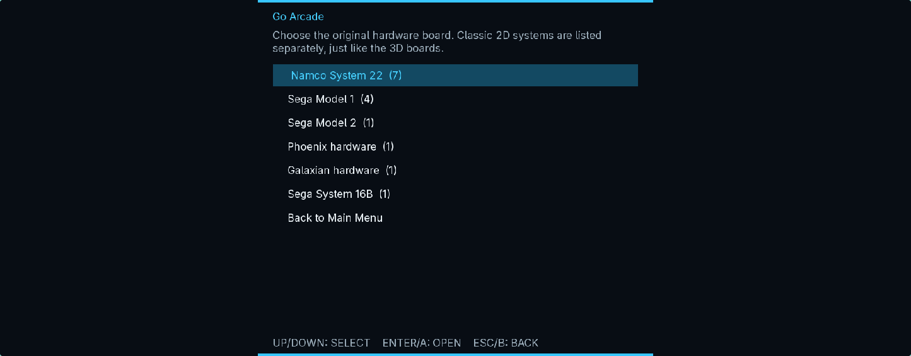
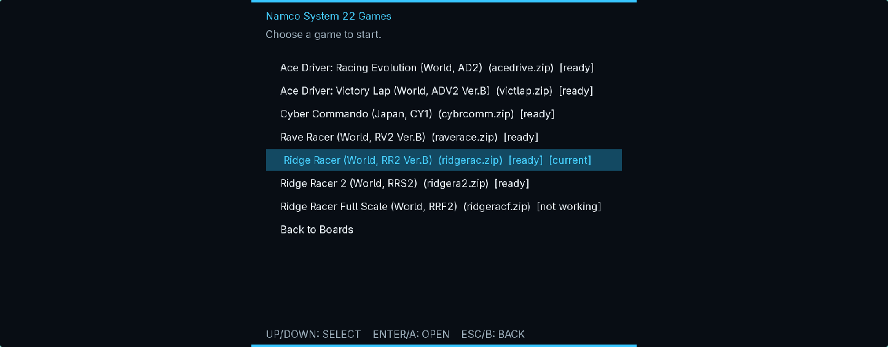
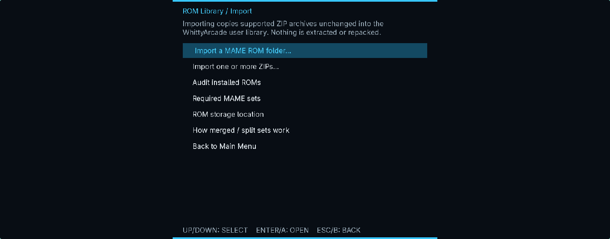
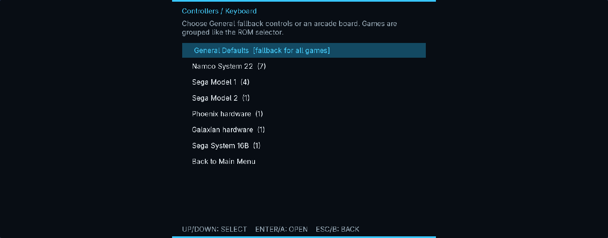
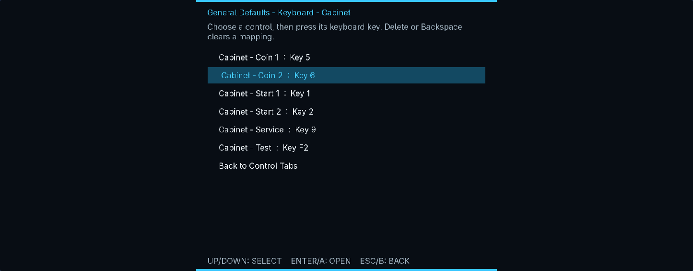

22
Namco System 22 / Super
Ridge Racer, Ridge Racer 2, Rave Racer, Ace Driver, Victory Lap, Cyber Commando, Time Crisis, Dirt Dash and Aqua Jet.
9 supported setsStandalone arcade emulation · Windows and Linux x86-64
WhittyArcade brings Namco System 22, Sega Model 1, Sega Model 2 and selected classic 2D hardware into one purpose-built desktop frontend. Import your own compatible archives, map your controls and go.
CURRENT BUILD
Hardware coverage
Games, input profiles and persistent data stay grouped by the original arcade hardware.
Ridge Racer, Ridge Racer 2, Rave Racer, Ace Driver, Victory Lap, Cyber Commando, Time Crisis, Dirt Dash and Aqua Jet.
9 supported setsVirtua Formula, Virtua Fighter, Star Wars Arcade and Wing War.
4 supported setsSega Rally Championship Revision C, with native machine, video, I/O and audio paths.
1 supported setPhoenix, Galaxian, Moon Cresta, UniWar S and Sega System 16B Shinobi.
5 supported setsInstallation
Choose the portable Windows ZIP or the native archive matching your Linux distribution.
Windows 10/11 uses WhittyArcade-windows-x86_64.zip. Linux builds are provided for Ubuntu 24.04, Debian 13, Fedora 43, openSUSE Tumbleweed and CachyOS/Arch. Download the matching checksum beside the archive.
On Windows, compare the PowerShell result with the downloaded .sha256 file:
Get-FileHash .\WhittyArcade-windows-x86_64.zip -Algorithm SHA256On Linux, let sha256sum check it directly:
sha256sum -c WhittyArcade-<target>-x86_64.tar.gz.sha256Windows: extract every file, keep the DLLs beside the executable, then open WhittyArcade.exe. No installer or administrator access is required.
tar -xzf WhittyArcade-<target>-x86_64.tar.gz
cd WhittyArcade-<target>-x86_64
chmod +x WhittyArcade
./WhittyArcadeLinux builds are dynamically linked. If a library is missing, install the equivalent SDL2, SDL2_ttf, OpenAL, OpenGL, GLEW, Vulkan loader, zlib, MiniZip, mpg123 and GLM runtime package from your distribution.
ROM library
The importer copies compatible MAME ZIP archives unchanged. It does not extract, modify or repack them.
Launch WhittyArcade with no arguments, then choose ROM Library / Import.
Import one or more archives, or point the scanner at an existing MAME ROM directory.
Choose Audit installed ROMs. A set marked ready has passed the loader's size and CRC checks.
| Board | Supported short names | Companions |
|---|---|---|
| Namco System 22 | ridgerac, ridgera2, raverace, acedrive, victlap, cybrcomm | namcoc71.zip and namcoc74.zip |
| Namco Super System 22 | timecris, dirtdash, aquajet | namcoc71.zip; no C74 archive needed |
| Sega Model 1 | vformula, vf, swa, wingwar | Split vformula also needs vr.zip |
| Sega Model 2 | srallyc | None; segabill.zip is optional |
| Phoenix | phoenix | None |
| Galaxian | galaxian, mooncrst, uniwars | None |
| Sega System 16B | shinobi4 | Split sets also need shinobi6.zip |
On Windows, imported ROMs and user data live below %LOCALAPPDATA%\WhittyArcade. On Linux, ROMs normally use ~/.local/share/WhittyArcade/roms and settings use ~/.config/WhittyArcade.
All three layouts are supported. A non-merged game ZIP is self-contained. Split sets need their parent or companion archive beside them. For a merged set, import the parent ZIP; clone entries are found by basename.
Input
Profiles can be global, board-specific or game-specific. Hot-plugged SDL controllers can be refreshed without restarting.
The standard Ridge Racer cabinet has no separate start switch. Insert a coin, then press the accelerator to start or select.
Move the mouse to aim and left-click to fire. The player begins hidden. Hold Space to stand and attack; release it or right-click to take cover and reload. Gameplay replaces the desktop arrow with a thick cyan P1 target sight; two-player gun profiles use a separate red/magenta P2 sight.
Extensible cabinets
WhittyArcade keeps game metadata, board behaviour and host controls separate, so a supported set appears consistently everywhere.
A validated ROM profile supplies the short name, regions, interleave and companion archives.
The board module owns real hardware differences; the launcher, audit and save tools stay board-neutral.
Game-specific actions use the common controller layer, then loader, bus and live boot checks prove the integration.
Time Crisis, Dirt Dash and Aqua Jet share the board implementation while retaining their own ROM profiles and cabinet controls. Catalog entries expose each game consistently to the browser, audit and per-game controller pages. Virtua Cop 2 ROM-loading groundwork is also present, but that game is not yet listed as playable.
Launcher tour
These are genuine captures from the current desktop launcher.






Troubleshooting
On Windows, extract the complete ZIP so every bundled DLL remains beside WhittyArcade.exe. On Linux, use the archive matching your distribution and run from a terminal to identify any missing runtime library.
Run Audit installed ROMs. Confirm the exact supported short name and keep required parent, companion and firmware ZIPs beside the game archive.
Connect it, open Controllers / Keyboard, then choose Refresh plugged-in devices. The controller must be recognised by SDL as a game controller.
No. Preview 2 validates boot, attract/gameplay scenes, audio, gun coordinates, trigger and pedal behaviour, but some Super System 22 fog and sprite alpha/blend details remain experimental.
Windows stores settings, input maps, EEPROM/NVRAM and high scores below %LOCALAPPDATA%\WhittyArcade; Linux uses ~/.config/WhittyArcade. The NVRAM Manager can back up, export, restore or factory-reset persistent data.
Licence and ownership
Official unmodified binaries are licensed for personal, non-commercial use. Redistribution, commercial use, public exhibition, hardware bundling, modification and reverse engineering are restricted by the WhittyArcade Proprietary Software Licence, except where law or a third-party component's own licence provides otherwise.
Third-party emulator cores and adaptations retain their original licences and attribution. No game ROMs, firmware or keys are distributed.
{kind=link}
{kind=link}
{kind=link}
{kind=link}
{kind=link}
{kind=link}